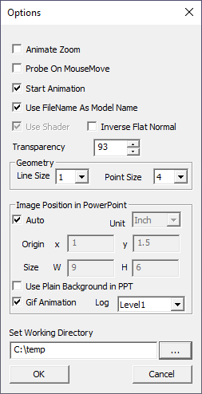

Options
VCollab Pro users can edit several settings for animation using the Options panel in Edit menu.

The various options and fields seen in the Options panel are explained below
| Animate Zoom | For smooth transformation while doing Rubber band zoom. |
| Probe on Mouse Move | To probe values on mouse over geometry. By default values are probed on left click of the mouse. |
| Start Animation | Starts animation at the time of launching the CAE Animation Control.If it is unchecked, users have to click Play to start animation. |
| Update Normals On CAE Animation | Updates Normals of model during CAE Animation. |
| Use File Name as Model Name | CAX file name can be used as root model node name. Note: This option will be ignored if the CAX file name is of Unicode characters. It will work for ASCII characters. |
| Use Shader | Shader programming is supported in this application for better performance. To toggle shader, VCollab recommends to close and reopen the application. |
| Inverse Flat Normals | In some old graphics cards, during CAE Animation,Model will be rendered in black color.This happens when Update Normal in CAE Animation is enabled.This option resolves this issue. |
| Transparency | Allows users to edit Display Mode transparency value percentage.Default Value is 93%. 0% refers to No- transparency. 100% refers to Full transparency (Invisible) |
| Line Size | Updates the geometry line set size. |
| Point Size | Updates the geometry point set size. |
| Image Position in Powerpoint | Allows users to position the image and change the size in powerpoint slide. |
| Auto | Positions the image with default options. |
| Unit | Allows users to select position and size in either inch or pixel. |
| Origin | Allows users to modify the position of the image. |
| Size | Allows users to modify the width and height of the image |
| Use Plain Background in PPT | Sets plain background before generating images for ppt. |
| Gif Animation | Captures animation frames into GIF format, which can be inserted into PPT. |
| Set Working Directory | The directory from which the cax file was loaded is the default working directory. The working directory can be edited and set by the user. All file dialogs will pop with the setworking directory. |